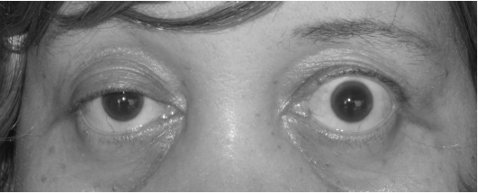

Caso clínico · porta de entrada
Marcela, 25 a: a força que muda com o uso
Braços que não sustentam o penteado, pálpebra que cai com o olhar e voz que cansa de contar até 100. O fio comum ainda não foi nomeado — virá no fecho.
Marcela, 25 anos. Há alguns dias: dificuldade para manter os braços elevados acima do pescoço — principalmente à noite, ao pentear os cabelos após o banho.
Há algumas semanas: queda das pálpebras superiores com diplopia, também à noite. Pela manhã, parecia que nada tinha acontecido.
Exame físico geral sem alterações.
Manobras que revelam a piora
- Ptose quando o olhar fica fixo para o teto por dois minutos.
- Incapacidade de manter os braços estendidos por poucos minutos.
- Discreta disfonia ao contar até 100.
- No restante do exame neurológico: sem outras alterações.
Positivos vs ausentes
Método: selecionar os dados positivos antes de nomear a doença.
Positivos de Marcela: fraqueza (dificuldade em manter braços elevados); queda da pálpebra com diplopia; e o fio comum — piora com o esforço.
O que não está no caso: espasticidade, Babinski, atrofia, fasciculação, arreflexia, CPK elevada. Não é padrão de 1º NMS, 2º NMS nem miopatia.
| Presente | Ausente (exclui andares) |
|---|---|
| Fraqueza + piora com uso | Espasticidade / Babinski |
| Ptose + diplopia flutuantes | Atrofia / fasciculação |
| Disfonia ao esforço | Arreflexia / CPK elevada |

Kurukumbi M et al., Journal of Medical Case Reports 2008;2:245, via Wikimedia Commons. Licensed under CC BY 2.0. Source: commons:Ptosis_myasthenia_gravis.jpg

Ptose flutuante com esforço
O achado clínico de Marcela: pálpebra que cai com o uso e sobe com o repouso. Não é ptose fixa (congênita, 3º nervo) — é ptose que varia ao longo do dia e com o esforço sustentado. A foto traz a lição: a pálpebra de um lado está mais baixa; o outro lado compensa (pseudo-retração de Hering).
Força que varia = placa
Quanto mais se utiliza a musculatura, mais fraca ela fica: a força varia com o movimento/uso. Isso classifica a topografia como placa motora.
Bordão: Força que varia com o uso = placa.
MG até prova em contrário
A grande doença que afeta a placa motora — até prova em contrário — é a miastenia gravis.
Diagnóstico provável de Marcela: miastenia gravis (fraqueza + fatigabilidade ocular, proximal e bulbar leve).
Topografia placa motora · linha da fraqueza flutuante na topografia em 4 andares.
Quiz
Q1. Em Marcela, o fio comum que une braço, pálpebra e voz é:
Gabarito: B. O caso não é "fraqueza qualquer" — é força que cai com o uso (penteado, olhar sustentado, contar alto).
(A) não há espasticidade/Babinski. (C) CPK elevada não está no caso e aponta miopatia. (D) arreflexia não está; seria outro andar.
Q2. Força que varia com o movimento/uso classifica prioritariamente a topografia como:
Gabarito: C. Variação com o uso é a assinatura da placa na trilha de fraqueza.
(A) espástica/Babinski. (B) proximal + CPK, sem o padrão "cai e recupera com repouso". (D) coordenação/tremor, não esse padrão.
Q3. A doença-mãe da placa até prova em contrário é:
Gabarito: C. A miastenia gravis é a doença de placa por excelência — alvo pós-sináptico (AChR), fatigabilidade ocular/proximal/bulbar, resposta a piridostigmina.